Your TV services.
Faster than light.
One calm, quick player for the Xtream Codes, M3U and Emby services you already have — on your TV, phone and computer. Private by design, free forever.


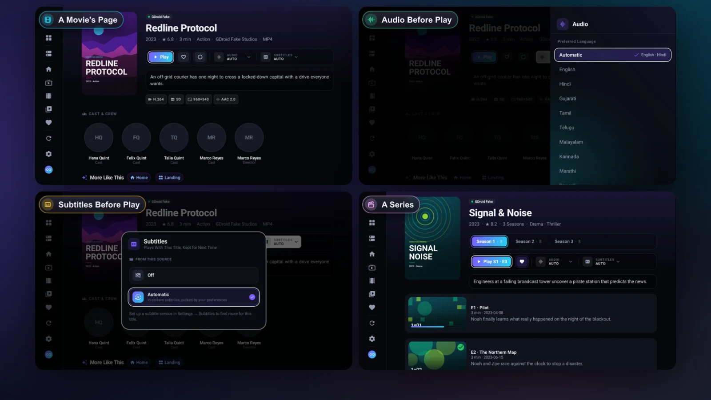


Everything you watch, without the wait.
Instant Everything
Channels start fast, zapping is smooth, and huge libraries stay quick — even on low-cost TV boxes.
Live, Guide and Catch-Up
A full TV guide with categories, reminders, Start Over and catch-up where your provider has it.
Movies and Series
Posters, ratings, cast and crew, Continue Watching, Next Up, and one card per title across services.
Private by Design
No account, no UI ads, no ad tracking. What you watch stays on your device.
One Stream per Service
Built for single-connection plans: never a second connection behind your back.
Plays What Others Stumble On
Picture repair for tricky streams, tracks you pick are kept, subtitles from three services, Chromecast.
Tachyon in motion.
The whole tour, the one-minute version, or the Short — everything shown is the app’s built-in demo.
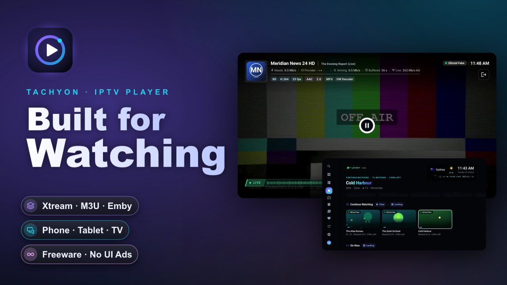
Services, the player for movies and live channels, the stream details bar, formats, buffering and privacy — watch on YouTube.
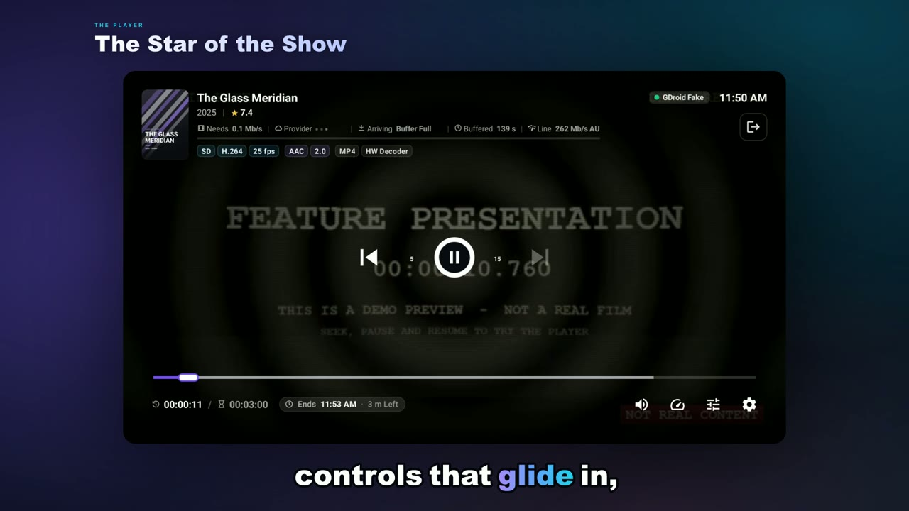
Tachyon in under a minute — watch on YouTube.
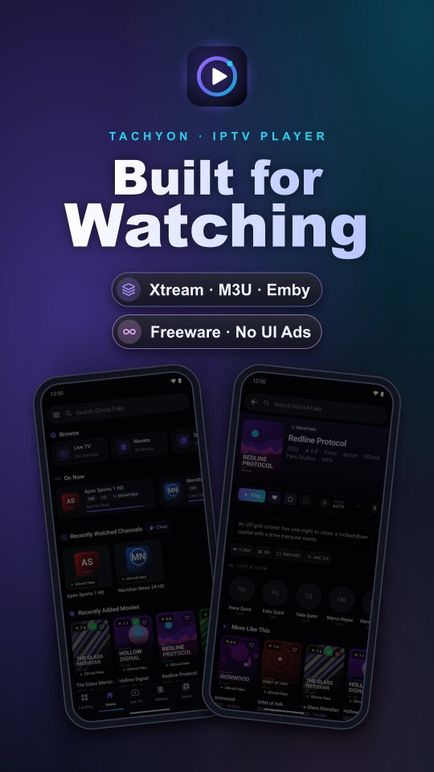
The minute, made for phones — watch on YouTube Shorts.
Made for every screen.
On Your TV
Built for the remote: big, calm screens, a focus you can always see, and Back that always does what you expect.

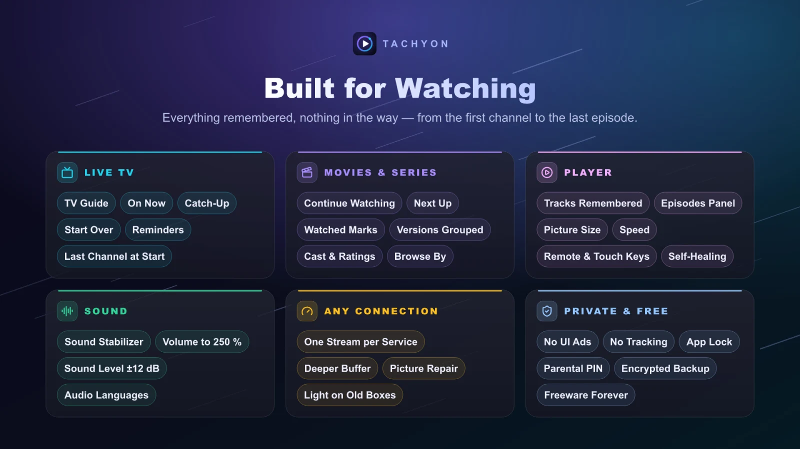
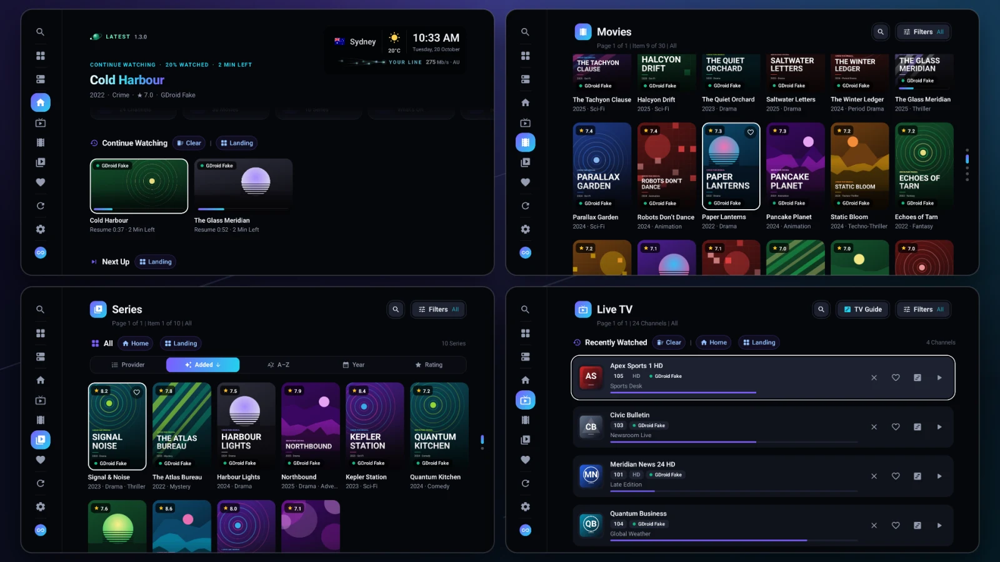


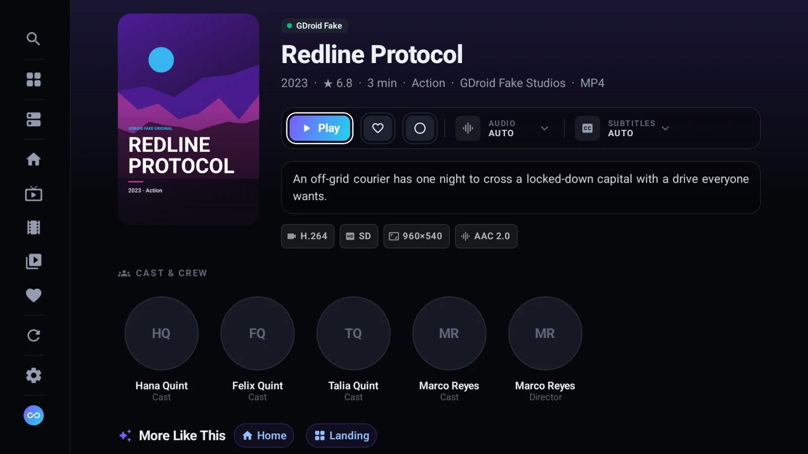
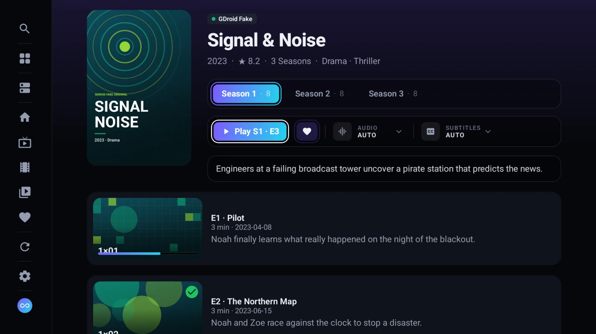

In Your Pocket
Your whole library on the phone, with Chromecast to the big screen when you want it.


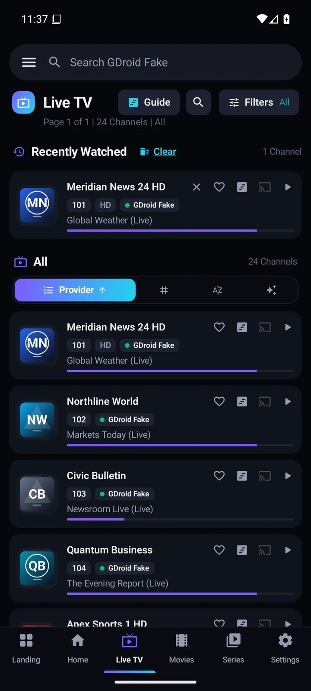
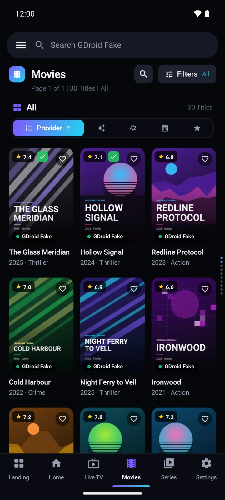
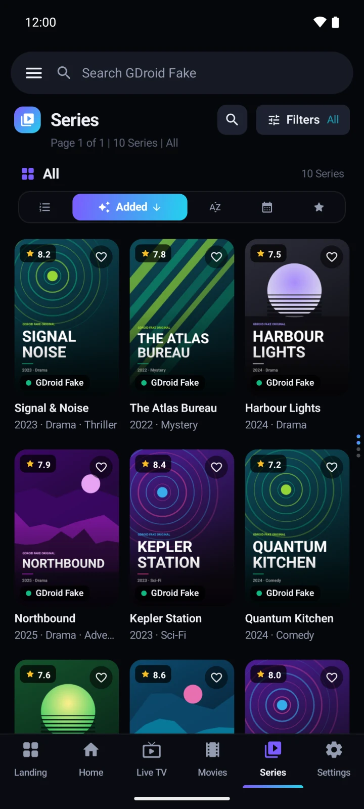
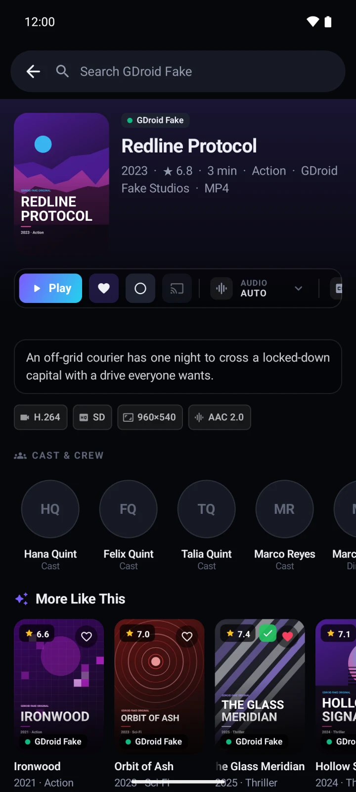
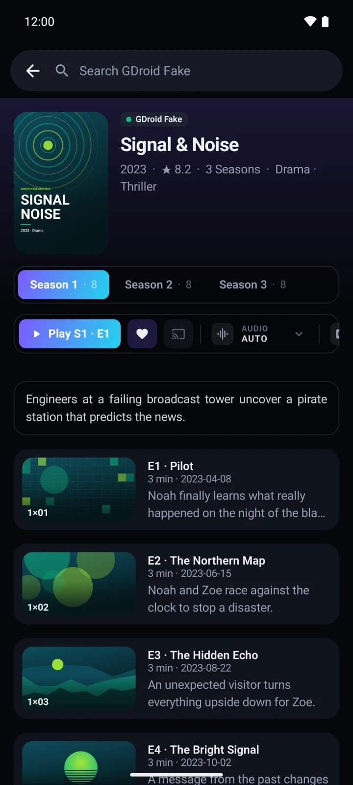
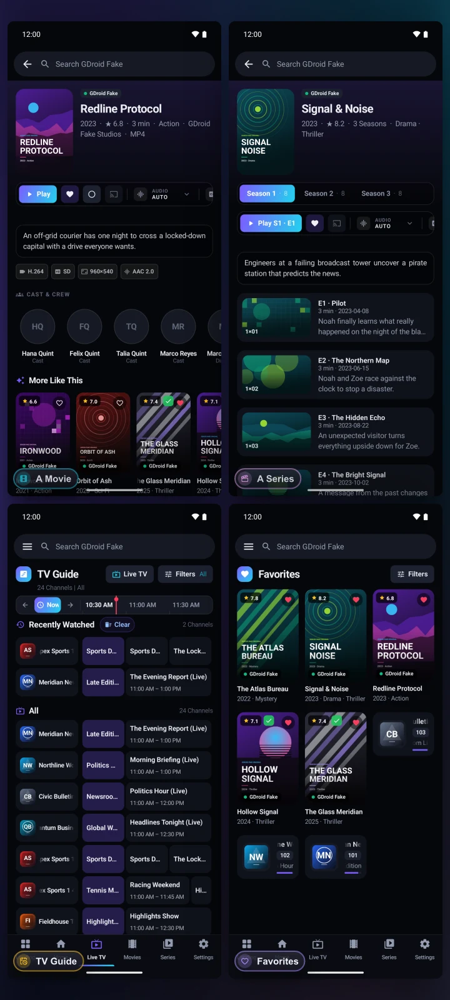


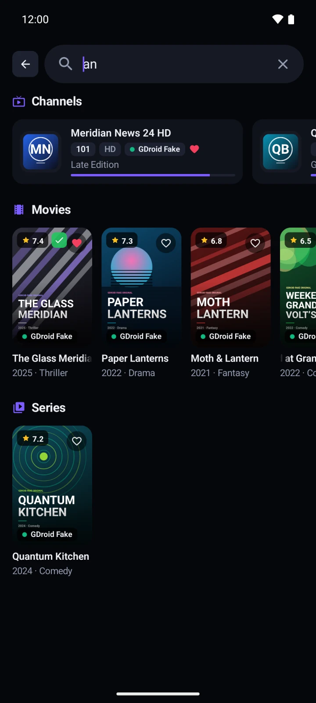

The Player
Swipe for volume and brightness, slide sideways through your channels — the list says what you’re browsing and how many. Pin Stream Info to see at a glance whether a slowdown is the provider, the stream or your line.
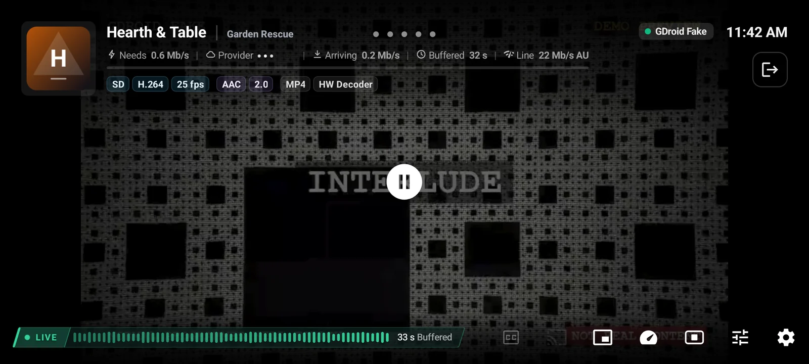


Pick your device.
Always the latest release, signed by the developer, with a backup link for every download.
Your Downloader Codes
Open Downloader, type a code in the box on its Home tab and select Go. Both codes install the same, newest Tachyon: if one doesn’t work, use the other.
or open aftv.news/7607080 in any browser
If you see a Dropbox page, select its Download button.
or open aftv.news/2336338 in any browser
Google Drive says it can’t scan the file for viruses: select Download Anyway. It says this about every app file of this size.
Try Open Live TV, Free
News, local networks and free app channels from open playlists, added in one tap. Tachyon checks a list answers before it adds it.
- Settings → About → How To → Try Open Live TV
- Pick a list: your country’s come first
- Select Add. Channels and TV guide load by themselves.
From your phone: scan Easy Settings on the TV’s About page, then open the Open TV tab.
What’s In It
- Your CountryFree-to-air channels, from Free TV and iptv-org
- World NewsThe big news channels, in English
- Free TV AppsPluto TV, Samsung TV Plus, Plex, Roku and Tubi channels
- Aussie Live For YouABC, SBS, Seven, Nine and 10 for your city, with a TV guide
Aussie Live: Your City
Picked from your time zone. Choose another city if it’s not the nearest.
https://i.mjh.nz/au/Sydney/raw-tv.m3u8https://i.mjh.nz/au/Melbourne/raw-tv.m3u8https://i.mjh.nz/au/Brisbane/raw-tv.m3u8https://i.mjh.nz/au/Adelaide/raw-tv.m3u8https://i.mjh.nz/au/Perth/raw-tv.m3u8https://i.mjh.nz/au/Hobart/raw-tv.m3u8https://i.mjh.nz/au/Darwin/raw-tv.m3u8https://i.mjh.nz/au/Canberra/raw-tv.m3u8Tachyon provides no channels. The lists come from independent projects, can change or stop at any time, and many channels play only in their own country.
Good Questions
The short answers. The Manual has the long ones; Troubleshooting helps when something gets in the way.
The App
What it is and what it plays
Does Tachyon come with channels or movies?
No. Tachyon is a media player only. It doesn't provide, host, sell or recommend any content, and it isn't affiliated with any IPTV provider. You add the services you're entitled to use. A built-in offline demo shows how everything works first.
Is it free?
Yes: Freeware Forever, with no subscriptions and No UI Ads.
Which devices does it run on?
Android phones and tablets, Android TV, Google TV (including Chromecast with Google TV) and Fire TV on Android 7.0 or newer, plus Windows, macOS and Linux computers. It's tuned to stay smooth on low-cost TV boxes with little memory.
Which services can I add?
Xtream Codes accounts (server, username and password), M3U / M3U8 playlist links (or an M3U built from a panel login), and Emby servers. You can add several and switch between them, or browse them merged.
Installing & Updating
Getting it on, keeping it current
How do I update?
Tachyon shows New Release on its start screen when there is one: select it, then Update Now. It downloads the new version from the developer's signed source, checks it and installs it, on TVs, phones and computers alike. From Google Play, it updates itself.
Why does my Mac (or Windows) warn about the app?
Tachyon is signed with the developer's own key, not a paid Apple or Microsoft certificate, so macOS asks you to confirm once (Privacy & Security → Open Anyway) and Windows SmartScreen shows More Info → Run Anyway. Step by step. Updates from inside the app don't ask again.
Why does Google Drive warn that it can't scan the file?
Google Drive says this about every app file of this size. Select Download Anyway: the file is the official Tachyon app, signed with the same key as every release.
Android says "App not installed". What now?
Usually a copy from another source (for example Google Play versus a code) is already installed with a different signature. Keep updating the way you first installed, or uninstall that copy first (this removes its services and settings).
Your Service
Connections, speed and the guide
Will it open a second connection on my plan?
No. Tachyon keeps to one stream per service, so single-connection and shared plans keep working.
What if my provider is slow?
Tachyon reads ahead as fast as your provider sends, keeps a deeper buffer for movies and series, and offers Buffer Ahead when a title arrives slower than it plays — it fills once, then plays to the end without stops.
Does it show the TV guide?
Yes — the guide that comes with your service (the Xtream EPG, or the playlist’s XMLTV link), with reminders, and Catch-Up / Start Over on channels whose provider keeps an archive.
Ready when you are.
Install in a minute, try the offline demo, then add your own services.